<mat-toolbar color="accent" class="mat-elevation-z4">
  <span>
    <button *ngIf="isAuthenticated$ | async" mat-mini-fab (click)="sidenav?.toggle()">
      <mat-icon>menu</mat-icon>
    </button>
    <span class="logo">
      
    </span>
    <span class="title">
      {{ title }}
    </span>
  </span>
  <span class="spacer"></span>
  <button *ngIf="isAuthenticated$ | async" (click)="logout()" class="login" mat-mini-fab>
    <mat-icon>person</mat-icon>
  </button>
</mat-toolbar>

<mat-sidenav-container>
  <mat-sidenav #sidenav mode="side" [opened]="isAuthenticated$ | async" class="app-sidenav">
    <nav>
      <a mat-button class="nav-link"
         *ngFor="let link of links"
         [routerLink]="link.path" routerLinkActive="active">
        <mat-icon>
          {{link.icon}}
        </mat-icon>
        {{link.title}}
      </a>
    </nav>
  </mat-sidenav>

  <div class="container">
    <router-outlet></router-outlet>
  </div>

  <div *ngIf="isAuthenticated$ | async">
    <df-messenger
    intent="WELCOME"
    chat-title="Ktick-bot"
    agent-id="6c1cef1e-48e8-4da2-b208-355736a53367"
    language-code="en"
  ></df-messenger>
  </div>

</mat-sidenav-container>


